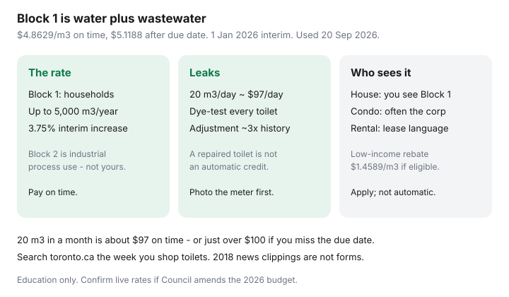

Utilities · Canada
Toronto water bills explained: consumption, sewer, and how to cut them
Toronto homeowners open a utility bill and see a water-and-wastewater number that dwarfs the “water” they imagined. The city does not print a cute separate sewer ¢ for most metered houses. Block 1 is a combined water-plus-wastewater rate per cubic metre. You are paying to drink it and to treat what leaves.
This is Toronto-specific bill literacy. Canada-wide fixture and leak tactics live in lower municipal water and sewer bills. The meter procedure is the leak-test guide.
Disclosure: There is no natural affiliate product in a Toronto Water bill explainer. Saving Optimizer does not claim City of Toronto or plumber partnerships. This is education — not a billing adjustment, a rebate approval, or legal advice.
Key takeaways
- Effective 1 Jan 2026 (interim rates used 20 Sep 2026): Block 1 combined water + wastewater is $4.8629/m³ if paid on or before the due date, $5.1188/m³ after. That is a 3.75% increase on Block 1.
- Block 2 ($3.3219/m³ on time) is an industrial process rate above 5,000 m³/year — not a household “tier” you unlock by conserving.
- A leaking toilet can waste 20 m³/day ≈ $97/day at the on-time Block 1 rate (Toronto Water’s own illustration). Dye-test before you phone 311.
- Leak adjustments are narrow: typically a jump of about three times historical daily average, plus other tests. A repaired toilet is not an automatic credit.
- Condos and many apartments never see a Toronto Water bill — the corporation or landlord does. Ask what is in the fee before you “save” on a tap you do not pay for.
Bill line items: water, wastewater, stormwater where applicable
On a typical metered house, the consumption line is Block 1 water-and-wastewater together. You will also see a late-payment path (the higher ¢) and, on some accounts, service fees that are not volume (a new connection is thousands of dollars — not a household conservation lever). Stormwater in Toronto has been a policy conversation and can appear as a separate program or property-related charge depending on the year and the property class — read the current bill legend rather than a 2022 thread. Do not invent a stormwater ¢ from a U.S. bill.
The 311 / toronto.ca “utility bill” page is the source of truth for how your account is grouped with waste and water. If you pay through a property-tax instalment or a third-party autopay, you can miss the m³ entirely. Log the portal and look at consumption, not just the debit.

Block or tier pricing patterns to verify at draft
| Block | Who it is for | On time / after due date |
|---|---|---|
| Block 1 | All water consumption up to 5,000 m³/year (households live here) | $4.8629 / $5.1188 per m³ |
| Block 2 | Industrial process use over 5,000 m³/year in the industrial program | $3.3219 / $3.4967 per m³ |
| Low-income rebate | Eligible low-income seniors or persons with disabilities, under 400 m³/year | Interim 2026 rebate $1.4589/m³ (about 30% off on-time Block 1) — apply; it is not automatic |
Labelled sketch: 20 m³ in a month (a leaky-toilet week plus normal use can exceed this) is about $97 on time — or a bit over $100 if you miss the due date. Pay on time; the late ¢ is a real multiplier. Flat-rate leftover accounts still exist in some former-city pockets; if you are unmetered, ask Toronto Water about metering rather than guessing litres.
Indoor efficiency vs outdoor watering in summer
Indoor: flappers, 4.8 L toilets, showerheads, and the dishwasher only when full. Outdoor: Toronto watering rules change with the season and drought stage. A hose on the driveway in July is Block 1 ¢ with no “sewer holiday” assumed — unlike cities that cap sewer in summer. Rain barrels and a shut-off nozzle are cheaper than a smart sprinkler you never program. Pools are a fill event; treat them as a planned spike, not a leak.
Leak adjustment policies at a high level
Toronto Water charges for what passed the meter. Adjustments are discretionary and documented. In household language, from the high-bill pages we used 20 Sep 2026:
- Unexplained increase: about 3× historical daily average; not explained by city work; not reasonably an occupant leak; plumber letter that the system is free of defects.
- Uncontrollable (known leak / plumbing defect): residential property, 3× test, first-time rules, and other conditions on the live page. Income and occupancy tests have been part of relief conversations in past cases — do not assume you qualify.
- A running toilet you ignored is the hard case. Fix it, then ask what, if anything, the current policy allows. Get the denial in writing if you need to escalate.
Payment plans exist even when a credit does not. That is cashflow, not forgiveness.
Rebate and exchange programs to check on toronto.ca
Search toronto.ca for the current toilet, fixture, and capacity-buyback language the week you shop. Past basement-flooding and downspout programs are not the same as a toilet rebate. The low-income water rebate ($1.4589/m³ interim 2026, under 400 m³/year) is a separate application from a leak adjustment. Do not use a 2018 news clipping as an application form.
Apartment vs house: who sees the bill
Detached / semi / town on a city meter: you see Block 1. You can test the meter and dye-test toilets.
Condo: the corporation usually holds the bulk meter. Your fee includes water. Individual suite meters exist in some newer buildings — ask the board, not the listing agent’s memory. You cannot run a city leak adjustment on a bulk account you do not own.
Rental apartment: if water is “included,” the landlord or the corporation pays Toronto Water. Your lever is the lease and a conversation about a running toilet, not a 311 rebate. If you are separately metered, you are in the house case — keep the account in your name only if you can shut it off when you leave.
Sources & date stamps
- City of Toronto, Water rates & fees — Block 1 and Block 2 ¢/m³ effective 1 Jan 2026 (used 20 Sep 2026).
- City of Toronto, 2026 interim water and wastewater consumption rates (Council / staff materials) — 3.75% Block 1; low-income rebate $1.4589/m³.
- City of Toronto, Water leaks: costs & how to spot a leak — 20 m³/day / $97.26 illustration; dye test.
- City of Toronto, High water bill & leaks — adjustment tests at a high level.
- r/askTO threads — anecdote only; always prefer toronto.ca.
Frequently asked questions
Why is my sewer charge bigger than ‘water’?
On most metered houses Toronto bills a combined Block 1 water-and-wastewater ¢/m³ ($4.8629 on time from 1 Jan 2026). You are paying to treat what leaves as well as what you drank.
Is there a cheaper household tier if I use less?
Not really. Block 2 is an industrial process rate above 5,000 m³/year. Households live on Block 1. Paying on time avoids the higher late ¢.
Will Toronto credit a leaking toilet?
Only if you meet a narrow adjustment test — typically about 3× historical daily average plus other conditions. Fix the leak either way. A silent flapper can cost about $97/day at 20 m³.
I live in a condo. Where is my water bill?
Usually inside the maintenance fee on a bulk meter. You cannot run a city leak adjustment on an account you do not own. Ask the board if suites are separately metered.
Is there a low-income water rebate?
Eligible low-income seniors or persons with disabilities using under 400 m³/year may apply for an interim 2026 rebate of $1.4589/m³. It is not automatic.